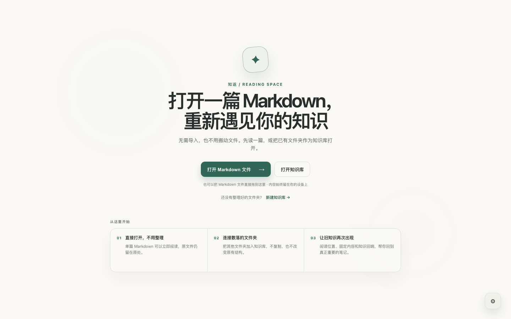

01
先读一篇
打开或拖入任意 Markdown，马上进入阅读。无需先建库，也不用填写分类。
无需迁移的本地 MARKDOWN 阅读空间
知返可以直接阅读任意 Markdown，也能把散落的文件夹原地连接起来。文件不需要搬家，真正有价值的内容会在以后再次回来。
当前免费 · macOS、Windows、Linux · 无需账户 · 本地优先

先读，再决定是否留下；先尊重原来的文件结构，再让真正有用的内容慢慢连接起来。
打开或拖入任意 Markdown，马上进入阅读。无需先建库，也不用填写分类。
有价值时再加入知识库。单篇文件和其他文件夹都保持原位，不复制、不迁移。
阅读位置、固定内容、全文搜索和知识回响，让重要笔记不再保存后就消失。
知识回响
那篇旧笔记不需要更多标签，它只是需要一个合适的时刻回来。
阅读时，知返会在本地知识库中安静地寻找有意义的连接，展示相关段落，以及它为什么在此刻回来。所有计算都留在你的设备上。
阅读那篇被忘记了 217 天的笔记 →知返不要求账户、云同步或专用格式。笔记仍是普通文件；来源链接、固定内容、阅读进度和知识回响反馈全部留在你的设备上。
一些关于本地知识、再次阅读，以及那些保存后逐渐消失的内容的故事。
让文件留在原处，让阅读先发生，再让真正重要的内容慢慢回来。
免费下载知返